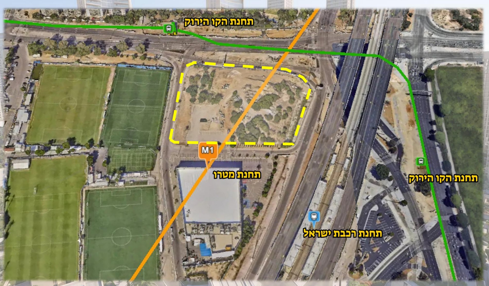
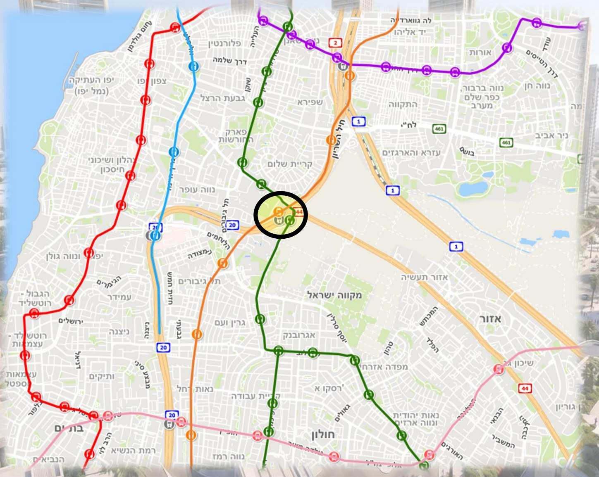
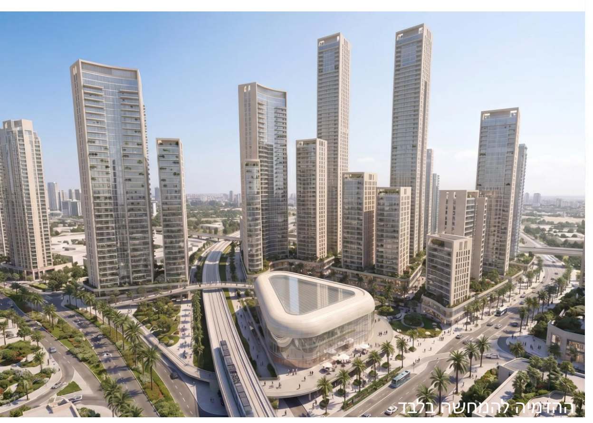
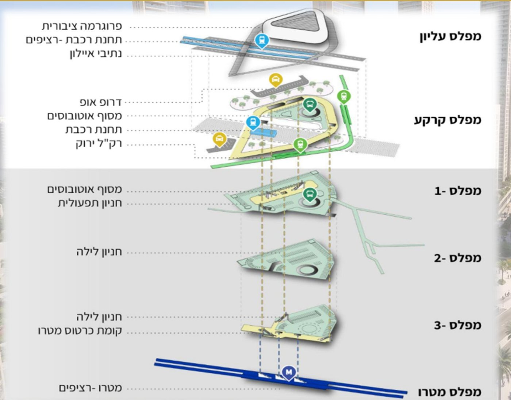
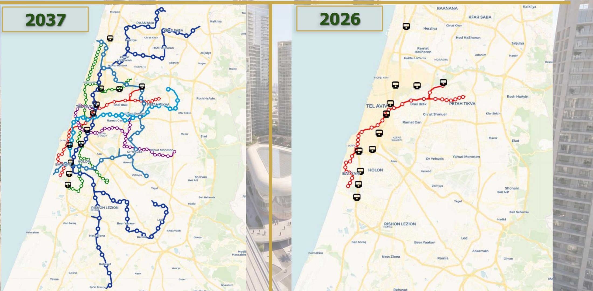
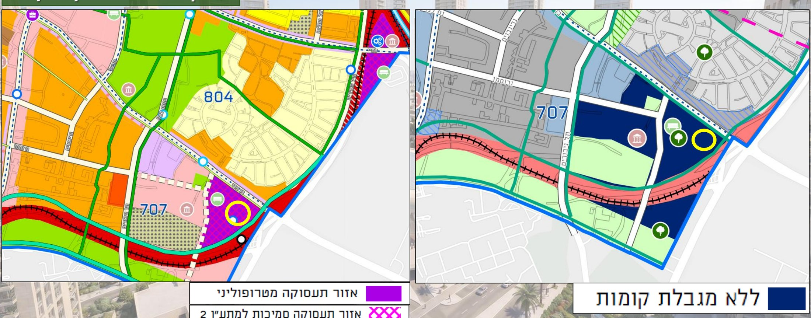
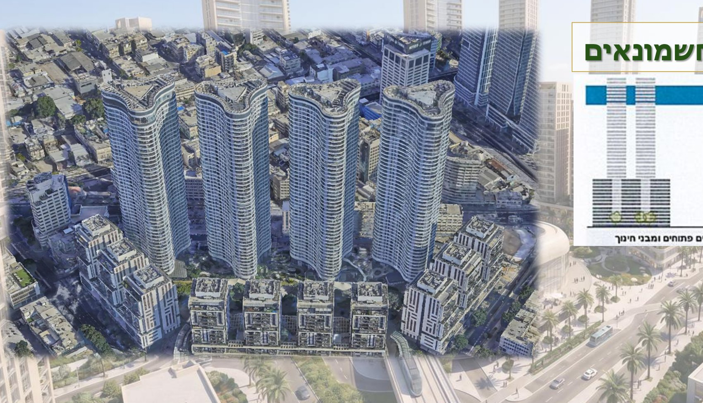

קרקע בטאבו על שמך
לא אופציה, לא נייר, לא הבטחה. רישום זכויות בלשכת רישום המקרקעין כבעלים משותפים (במושע), בליווי נאמן ועורכי דין.
בעלות רשומהתל אביב · גוש 6987 · מע"ר בן צבי
יחידת קרקע רשומה בטאבו על שמך — במתחם שבו תכנית המתאר של תל אביב מציעה זכויות בנייה של 1400%. מכפיל של ×14 לפחות על כל מטר קרקע, שמשמעותו קרקע לדירה של 100–120 מ"ר.
היתרון המרכזי
רח"ק (יחס שטח כולל לשטח הקרקע) הוא המספר שקובע כמה אפשר לבנות על הקרקע. בתכנית המתאר הכוללנית של תל אביב — תא/5500 — מגרש בגודל 1.5 דונם ומעלה באזור התעסוקה המטרופוליני זכאי לרח"ק מרבי של 14.0. זהו המכפיל הגבוה בישראל.
מה שאתם קונים
מה שהקרקע מייצרת
חלק יחסי בקרקע פרטית בגוש 6987, נרשם בטאבו על שמכם כבעלים משותפים.
לפי תא/5500, כל מטר קרקע במתחם מזכה עד 14 מ"ר שטח בנוי מעל ומתחת לקרקע.
הוראות התכנית קובעות שמרכיב המגורים יעמוד על לפחות 50% משטחי הבנייה.
המשמעות המעשית: קרקע שמקנה דירה של 100–120 מ"ר — בעיר היקרה בישראל.
מה בדיוק מקבלים
לא אופציה, לא נייר, לא הבטחה. רישום זכויות בלשכת רישום המקרקעין כבעלים משותפים (במושע), בליווי נאמן ועורכי דין.
בעלות רשומה1400% זכויות בנייה למגרש של 1.5 דונם ומעלה. לשם השוואה: מתחם גינדי TLV בחשמונאים נבנה ברח"ק 7.6 — כמעט חצי.
×14 מכפילמטרו M1, הקו הירוק של הרכבת הקלה, רכבת ישראל ו-BRT — נפגשים במרכז תחבורה משולב אחד, ממש על הקרקע.
נגישות שיאבנספח הבינוי של תא/5500 סומן מתחם 707 כאזור ללא מגבלת קומות — התנאי שמאפשר לזכויות להתממש לגובה.
אופק בנייה פתוחמחשבון
הזיזו את הסליידר וראו את החישוב מתעדכן בזמן אמת.
כל יחידה = חלק יחסי בקרקע בשטח של כ־16 מ"ר.
נכון להיום, מחיר ממוצע למ"ר דירה חדשה בתל אביב נמדד בעשרות אלפי שקלים. זהו בדיוק הפער שנקרא השבחה — והוא מותנה באישור התכנית ובהתקדמותה.
לקבלת תחשיב מלא ליחידה שלי* החישוב הוא אריתמטי בלבד, מבוסס על זכויות מוצעות בתכנית תא/5500 שהופקדה ב־04.01.2026 וטרם אושרה. אין בו משום הבטחת תשואה, הערכת שווי או ייעוץ. פירוט מלא בהסתייגות שבתחתית העמוד.
המיקום
מפגש דרך בן צבי וכביש 44 — נקודת המפגש שבין תל אביב-יפו לחולון, בתוך תחומי עיריית תל אביב. זו לא פריפריה של העיר; זו הכניסה אליה.


משרד תכנון ראשי: HQ אדריכלים · ניהול פרויקט: ע.סלעי · מתח"ם צומת חולון, תמ"א 65.
מרכז תחבורה משולב
מתח"ם הוא נקודה שבה נפגשים מספר אמצעי תחבורה עתירי נוסעים. גורמי התכנון — מינהל התכנון, נת"ע, נתיבי איילון ומשרד התחבורה — מרכזים סביב נקודות כאלה את מירב זכויות הבנייה. זה בדיוק ההיגיון שמייצר את הרח"ק של 14.



סטטוס תכנוני
שקיפות היא תנאי. אלה השלבים שכבר קרו, והשלב שעוד לפנינו — הוא בדיוק זה שמייצר את ההשבחה.
תכנית המתאר הארצית שמעגנת את תוואי המטרו ואת המרחב העירוני המוטה מטרו סביבו. הקרקע נכללת בתחומה.
הכרה בצומת כמרכז תחבורה משולב — מפגש של מטרו, רכבת קלה, רכבת ישראל ו-BRT.
המתחם מסומן כאזור תעסוקה מטרופוליני (707 ג' — מע"ר בן צבי), ללא מגבלת קומות, עם רח"ק מרבי 14.0 למגרש של 1.5 דונם ומעלה, ומרכיב מגורים של לפחות 50% משטחי הבנייה.
מכאן ואילך: קידום תב"ע משביחה מול מוסדות התכנון, ומימוש הזכויות — בבנייה עצמית, בעסקת קומבינציה או במכירת הזכויות. זהו גם השלב שבו מרוכז הסיכון.

פרופורציה

הביטחונות
לאחר השלמת ההתחייבויות, הרוכשים זכאים להירשם בלשכת רישום המקרקעין כבעלים משותפים (במושע) של המקרקעין, כל אחד לפי חלקו היחסי.
ה.פ.נ חברה לנאמנות עסקאות נדל"ן בע"מ — נאמן ייעודי לעסקאות מקרקעין, שפועל לפי כתב הוראות לנאמן המצורף להסכם.
היועצים המשפטיים לעסקה: משרד עורכי הדין הרצוג, פוקס, נאמן ושות' — יצחק שדה 6, תל אביב.
הסכם שיתוף פעולה להשבחה שמגדיר את יחסי השותפים, האסיפה הכללית, הנציגות והחלטות — לרבות רוב נדרש של 70% בהחלטות מהותיות.
הנציגות מזמינה חוות דעת שמאית לצורך הערכת שווי במועד סמוך למימוש, ובוחרת אדריכל לליווי התכנון.
לעסקה מנהלת קבוצה ייעודית, שמרכזת את ניהול העסקה, את קידום התב"ע המשביחה ואת הליווי מול גורמי התכנון — בכפוף להחלטות האסיפה הכללית והנציגות.
מי מלווה אתכם
קבוצת G-Group, בהובלת גיא בלושינסקי, פועלת בייזום, בשיווק ובניהול פרויקטים רחבי היקף בנדל"ן הישראלי — ביניהם מגדל היי טאוור בגבעתיים, WOW צומת הפיל ודיזנגוף 77 בתל אביב.
הקבוצה מתמקדת בפרויקטים באזורי ביקוש, מתוך מחויבות לשקיפות, לאמינות ולקשר אישי וישיר עם הלקוחות לאורך כל הדרך.
הערך האמיתי בנדל"ן הוא לא במה שכבר קרה, אלא במה שעומד לקרות.לאתר הקבוצה
יחידת קרקע · מע"ר בן צבי
מחיר ליחידה · בעלות רשומה בטאבו
השארת הפרטים אינה מחייבת ואינה מהווה התחייבות לרכישה.
שאלות ותשובות
רח"ק הוא היחס בין סך השטח הבנוי לבין שטח הקרקע. רח"ק 14 פירושו שעל כל מטר קרקע מותר לבנות עד 14 מ"ר. זהו המספר שקובע כמעט לבדו את שווי הקרקע: אותה חלקה בדיוק, עם רח"ק 2 או עם רח"ק 14, היא שני נכסים שונים לחלוטין. בתא/5500 שהופקדה ב־04.01.2026 נקבע רח"ק מרבי של 14.0 למגרש בשטח 1.5 דונם ומעלה באזור התעסוקה המטרופוליני.
כן. מבנה העסקה הוא רכישת חלקים בלתי מסוימים בבעלות במקרקעין בגוש 6987. לאחר השלמת ההתחייבויות לפי הסכם המכר, הרוכשים זכאים להירשם בלשכת רישום המקרקעין כבעלים משותפים (במושע), כל אחד לפי חלקו היחסי כמפורט בנספח להסכם. הכספים מנוהלים בנאמנות עד להשלמת התנאים.
לא — התכנית הופקדה, טרם אושרה. תא/5500 הופקדה ב־04.01.2026 והיא נמצאת בשלבי הליך תכנוני. תמ"א 70 ותמ"א 65 מהוות את המסגרת הארצית שמעגנת את המטרו ואת המתח"ם. חשוב שתדעו זאת במפורש: הפער בין המצב היום לבין התכנית המאושרת הוא בדיוק מקור ההשבחה הפוטנציאלית — וגם מקור הסיכון. אין ערובה שהתכנית תאושר, ואין ערובה ללוחות הזמנים.
השותפים חותמים על הסכם שיתוף פעולה להשבחה. האסיפה הכללית של השותפים היא הגוף המחליט, והיא בוחרת נציגות בת שלושה חברים. הנציגות מלווה את קידום התב"ע המשביחה מול מוסדות התכנון, מזמינה חוות דעת שמאית ובוחרת אדריכל. מנהלת הקבוצה מרכזת את הביצוע. החלטות מהותיות מתקבלות ברוב של 70% מקולות הנוכחים, לפי חלקו של כל שותף במקרקעין.
השקעה בקרקע בהליכי תכנון היא השקעה ארוכת טווח. מהפכת התחבורה שסביבה בנוי המתחם פרושה על פני העשור הקרוב — מ־2026 ועד 2037. אף גורם, כולל אנחנו, אינו יכול להתחייב למועד אישור התכנית או למועד מימוש הזכויות. מי שזקוק לנזילות בטווח הקצר — זו אינה ההשקעה המתאימה עבורו.
העיקריים שבהם: אי־אישור התכנית או אישורה בהיקף זכויות נמוך מהמוצע; התארכות לוחות זמנים; שינויי מדיניות תכנון; היטל השבחה, מיסים והוצאות פיתוח; והיעדר סחירות מהירה של קרקע בבעלות משותפת. לפני חתימה — קראו את מלוא מסמכי העסקה והיוועצו בעורך דין, בשמאי מקרקעין וביועץ מס מטעמכם. אנחנו נשמח להעביר לכם את כל המסמכים לעיון.
כן. ניתן לרכוש מספר יחידות, וחלקו היחסי של כל שותף במקרקעין נקבע בהתאם. שימו לב שגם משקל ההצבעה באסיפה הכללית מחושב לפי החלק היחסי בקרקע. השתמשו במחשבון שבעמוד כדי לראות את התחשיב לכל מספר יחידות.
צרו קשר
השאירו פרטים ונחזור אליכם עם המצגת המלאה, מסמכי העסקה, נסחי הרישום ותחשיב מותאם ליחידה שלכם. ללא התחייבות.